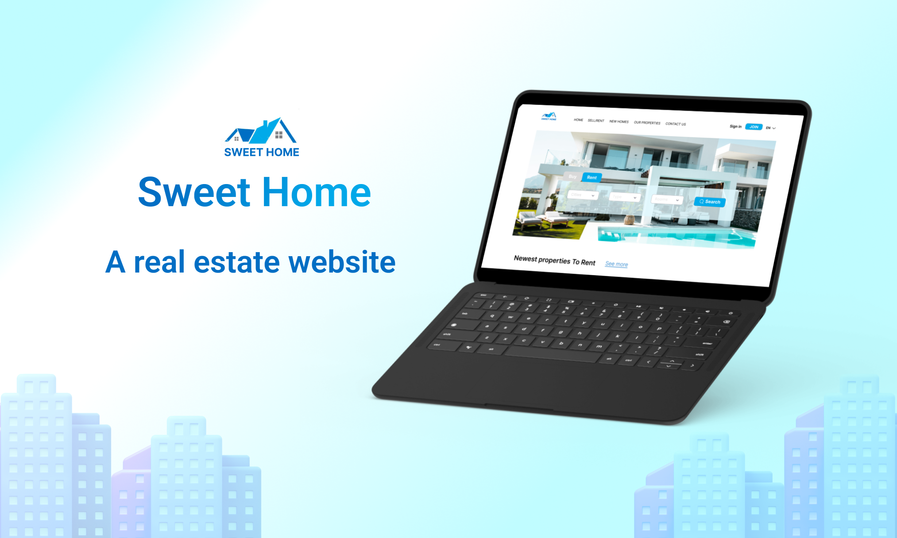
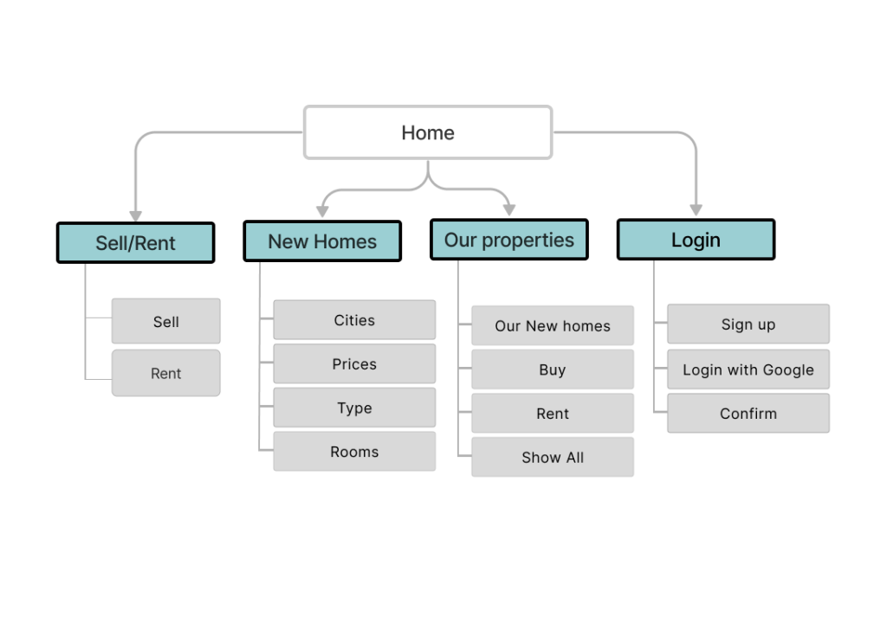
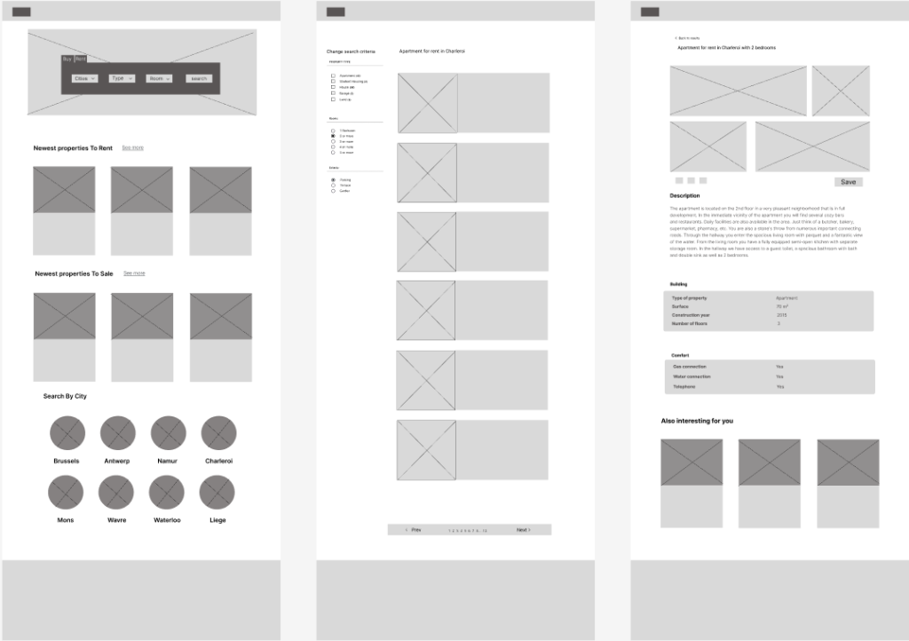

Inji Alasttal
IDEATION
For a user research, I conducted a study and created the personas to analyze pain points and determine priorities. Then I generated Sitemap to understand where in the process users were having troubles, created sketches, Lo-Fi and Hi-Fi prototypes. The project timeline is one week. Let’s dive into the process of creating a responsive website.
Sitemap
In the site map, i’ll make sure to uncover a seamless user experience with a sitemap designed for flow. From new homes to rent and buy proprties, you can easily navigate through our intuitive interface.
Mid-Fi Prototype:
I fleshed out the UI sketches, created mid-fi wireframes, and got down the clickable prototype for validation testing. I conducted validation testing, and found out a couple of issues need to be adjusted. For example, to make filters more prominent on the landing page so it can give user a clear signal that it is the primary call to action.
Hi-Fi Prototype:
After validating my Lo-Fi prototype, I made iterations to my design and moved into the Hi-Fi phase. I created a Hi-Fi prototype for the site’s flow, including an animated background, photos of the proprites, detiels, Navigation Bar and easy searching on the sities.

Validation
The interactive prototype performed well during user testing, with positive feedback highlighting:
I made a GIF photos to show you the validation of the site. It works fantastic, and I loved the animated background, which gives the site a more attractive look. Also, having easy-to-use navigation is important for any web site, from choosing what you are looking for to the location, makes every step clear and easy to flow.

Conclusion:
This project as a UI designer has been an incredibly fulfilling adventure, and I’m filled with pride and gratitude for the vital lessons I’ve learned along the way. Each day in this role has become a stepping stone towards my professional advancement over the last month, as I continue to use and refine the abilities I’ve learned in real-world circumstances. Notably, I took on the challenge of animating the background in this project, bringing a dynamic and visually interesting element into the user experience and a responsive web app. This endeavor culminated in the successful design of a website that not only meets practical needs but also displays a distinct and innovative look.